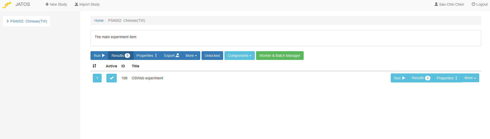

JATOS部署與測試
JATOS伺服器
由德國Max Planck研究所 Lange et al. (2015) 開發的JATOS網路伺服器開源程式，讓研究人員能自行架設或租用網站伺服器，部署以javascript撰寫的實驗腳本，包括 jsPsych, lab.js, OSWeb/OpenSesame, 以及PsyToolkit。
以下示範截圖來自測試腳本伺服器Cortex。如果要正式部署實驗腳本收集資料，建議自行準備伺服器，或使用MindProbe部署。
- 只要有google帳號，任何人都能自行登入Cortex伺服器。

Cortex登入網頁
- 初次登入的儀表板畫面。中間顯示JATOS最新版本，程式版本昇級時Cortex與MindProbe伺服器會最快更新，自行維護的伺服器需要手動更新。頂層按鈕可操作建立新實驗腳本(New Study)，匯入實驗腳本(Import Study)，個人帳戶資訊，以及登出(Logout)。
JATOS介面
註 有更新版務必更新，否則參與者可能無法登入實驗網頁。
匯出OSWeb腳本到JATOS
- 在此以部署示範腳本為例。開啟腳本後，經OpenSesame主選單“Tools -> OSWeb”切換到如以下截圖的畫面。
OSWeb 操作面板
“Make browser fullscreen”:匯出前建議勾選，參與者端執行時將自動切換為全螢幕模式。
“Test experiment in expernal browser”: 在本地端測試腳本執行狀況，建議匯出前測試到符合計畫條件。
“Export experiement as JATOS study”: 將腳本檔案轉換為可匯入JATOS伺服器的檔案。確認要匯出就按下這個按鍵，參考以下示範動畫。
“Convert JATOS results to csv/xlsx”: 將從JATOS伺服器下載的結果檔案轉換為csv/xlsx檔案。
“Compatibility check”: 確認腳本內元件設定無不相容JATOS伺服器的部分，務必保持“No probblems detected”再匯出腳本檔。
2. 匯出腳本如以下gif動畫展示：

- 上一步匯出檔案成功後。到Cortex儀表板按下匯入實驗腳本(Import Study)，進行如以下gif動畫的步驟:

- 匯入成功可由儀表板左側選單，切換到上傳成功的腳本專案操作介面。

JATOS設定部署方式
- 按下專案介面的按鈕“Worker & Batch Manager”，即開啟預設實驗網頁連結部署介面，展開“Default”左方箭頭，畫面如下截圖：
Worker & Batch Manager截圖
目前版本的JATOS支援五種部署方式，點擊右方“Get Link”按鈕，即可產生參與者能開啟實驗的網址。各種部署模式的圖標左方勾選之後，網址才能生效，停止實驗只要取消勾選。當實驗開始收集資料，左右兩邊顯示數字的按鈕，將顯示最新收集的紀錄數量。
“Jatos Worker”是提供實驗者測試用的模式。其他模式的部署效果參考以下簡介，詳細說明請見官方Worker type說明。
| 模式 | 效果 |
|---|---|
| Personal Single | 特定參與者專屬實驗連結，一項連結只能登入一次。 |
| Personal Multiple | 特定參與者專屬實驗連結，一項連結能登入多次至關閉為止。 |
| General Single | 任何參與者皆能使用的實驗連結，一項連結只能登入一次。 |
| General Multiple | 任何參與者皆能使用的實驗連結，一項連結能登入多次至關閉為止。 |
| MTurk | 在Amanzon MTurk平台招募參與者的實驗連結。 |
- “Worker & Batch Manager”介面可新增或刪除“Batch”，一個“Batch”相當於一群參與者。若是實驗要分派給不同地區的參與者，可設定“Batch”及實驗連結，輸出資料有Batch名稱。新增“Batch”只要在介面左上點選“New Batch”，在對話視窗輸入名稱即能新增；若要刪除Batch，從“Batch”介面右上選擇“More -> Delete”就能刪除。
實驗資料匯出JATOS
- 進入Results介面能執行匯出資料。點選專案介面任何一處“Results”按鈕都能進入，個人建議從“Worker & Batch Manager”介面，實驗者設定的實驗網址按鈕旁的“Results”進入，如此“Results”介面已經初步過濾可匯出資料。

Results介面
點選“Results”介面上方“Export Results”可匯出已存結果。JATOS提供兩種匯出方式：(1)ALL ~ 匯出所在這個Batch的所有紀錄；(2)Selected ~ 先自行選擇要匯出的紀錄，再點選匯出。
若是經過第三方平台招募參與者，也要匯出metadata(點選“Export Metadata”)，才能核對真正完成的紀錄。JATOS的metadata匯出後檔案格式是csv檔，相容大多數資料處理軟體。
OSWeb實驗資料格式轉換
- 從JATOS匯出的純文字結果檔是json格式，透過OpenSesame的OSWeb 操作面板“Convert JATOS results to csv/xlsx”轉換為相容大多數資料處理軟體的格式。執行前建議勾選“Include JATOS context information”，操作方式請見以下動畫示範：
檔案轉換操作示範
上一步：OSWeb腳本編輯
參考文獻

本網站由慈濟大學人類發展與心理學系副教授陳紹慶創建維護，網站內容採用創用 CC 姓名標示-非商業性 4.0 國際 授權條款授權.